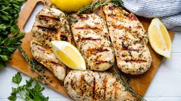

FOODPLUS
WELCOME TO CHANDARANA FOODPLUS We are an independent chain of supermarkets which is Kenyan owned. We started in the year 1959 with a small grocery shop at the busy corner of Highridge Shopping Centre at the junction of Masari Road and 3rd Avenue Parklands. High quality, low prices and offers and hassle-free shopping that gets you in and out. A product assortment and store layout that’s refreshingly simple, yet full of surprises to discover at every visit.